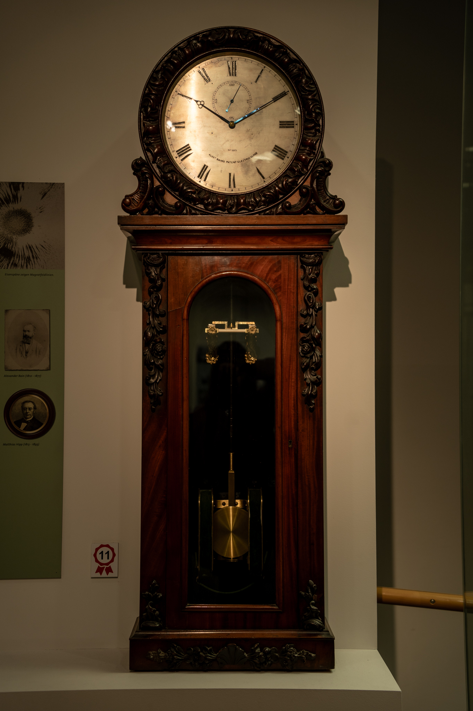

Rundgang Glanzstücke
Pendeluhr
Der schottische Uhrmacher Alexander Bain war ein Pionier der Telegraphie und Elektrotechnik. Schon 1841 hatte er sich die meisten grundlegenden Prinzipien für elektrische Uhren patentieren lassen. Doch aufgrund finanzieller und technischer Schwierigkeiten konnte er nur wenige Uhren herstellen. Nur eine Handvoll sind heute noch vorhanden. Übrigens: Die Uhr braucht man nicht aufzuziehen, da sie nicht durch Gewichte und Federn angetrieben wird.
Bild der Uhr

Entstanden im Rahmen des Projektstudium 2023/24 der HFU